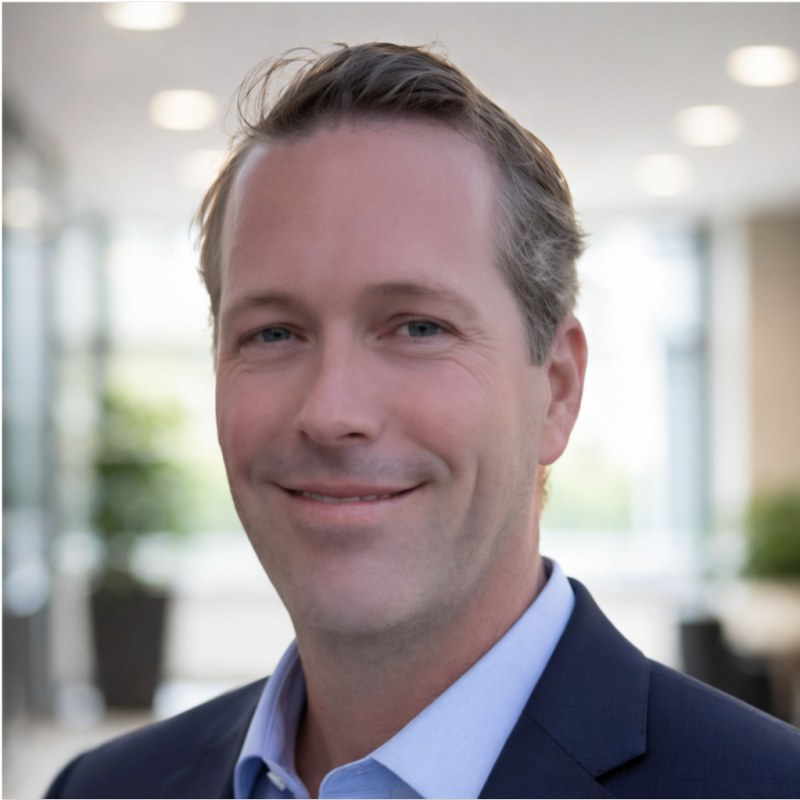

Head of AI · Fractional CAIO
For more than 12 years I have set the strategy and built hands-on: ML and AI platforms, and the last four running production GenAI and agentic systems against $100M+ per month in live client ad spend. I build and lead the teams, set the multi-year roadmap, and answer for measurable business outcomes.

Six principles I apply to every AI platform, whether I am starting from zero or inheriting something already in production.
My first question is whether AI is the best solution to the problem. A chatbot with predictable questions may work better as a decision tree; a model earns its place only where simpler systems fall short.
I match the level of human review to the risk of the task, capture reviewer feedback as ground truth, and loosen or tighten oversight as the system proves itself.
I route each task to the model that fits it, with fallbacks from LLM to rules to human review when something fails, and I set cost and latency budgets during design.
I keep customer and business unit data separate, control access by role, and set explicit rules for what data models can see, retain, or train on.
I assign every AI capability a risk tier before it ships, then scope red-team testing, input and output filtering, and bias audits to that tier.
I instrument everything: inference telemetry, automated evals on every model or prompt change, drift detection, and a feedback loop that turns production results into improvements.
Shipped systems with infrastructure costs, production failures recovered from, and revenue on the line.
A pattern of building and delivering that runs across 25 years of my career.
The right structure depends on your stage, your need, and how much ownership you want me to carry.
Let's Talk
Whether you are exploring a hire, have a specific role in mind, or want to start with a fractional engagement, a direct conversation about fit is the right first step.
Greater Boston, MA. Available immediately. gloeff@gmail.com